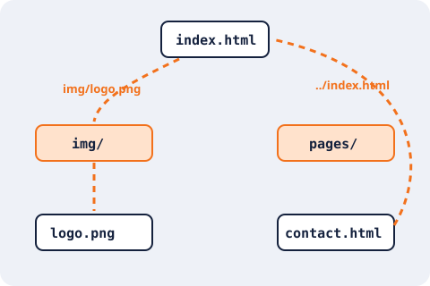

Never lose a link or a broken image again.
Path Finder teaches the three things that break most class websites:
<a href> links, <img> tags, and the file paths that connect your pages.

Your progress
0
day streak
0
minutes studied this week
0/4
lesson sections read
–
best quiz score
0/6
path puzzles solved
Progress is saved in this browser only.
How it works
1 · See it live
Read a short section, then edit real HTML in the playground and watch the result change as you type. The inspector shows where every link goes and which images are broken.
Go to Learn2 · Quiz yourself
Ten questions with instant feedback that explains why, plus six puzzles where you type the path between two files.
Go to Practice3 · Study in short bursts
Start a 10 to 45 minute focus timer. Each session is logged so you can keep your streak going, for this class or any other.
Go to Focus